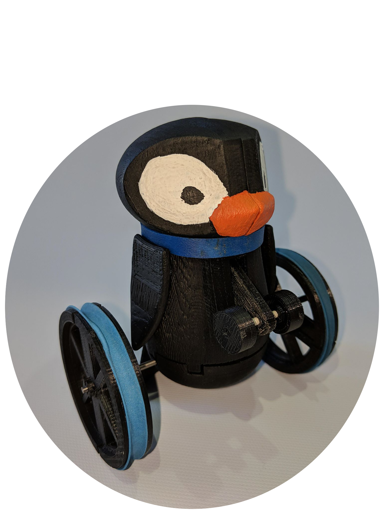

My name is Taylor von Hausen and I am an Engineering Systems and Computing student at the University of Guelph. I am 19 years old born in Kitchener, Ontario. Through my studies I have gained knowledge in many areas such as C and Java programming, VHDL and ALU design using a Spartan6 FPGA board and much more. I have a passion for technology as well as a variety of hobbies such as hockey, snowboarding, baseball, surfing and playing guitar.
Projects
The Pengoon Toy

This is the Pengoon Toy. Complete with four wheels, an exciting engage mechanism and powered by elastic energy this penguin sure knows how to pack a punch. When pushed over the two front wheels hit the ground and the mechanism holding the rear axle is moved. When this mechanism is moved the rear axle is released and allows the elastic energy to drive The Pengoon forward. The Pengoon easily achieved its goal of driving forward for 2 meters and is a fun, cute and creative toy that scored very well with the judges at the University of Guelph. Pengoon, Moving Forward!
Pengoon Toy Ad
As well as designing the toy a marketing video was made in order to hypothetically sell the toy. I am very proud of my work on this project and am very pleased with the result of both the toy as well as the marketing video made.
4 Bit Ripple-Carry Adder/Subtractor
Collaborated with a group of 2 others in the design and implementation of a 4 bit ripple-carry adder/subtractor using the Xilinx ISE Design Suite,VHDL code and a Nexys 3 Spartan 6 FPGA board. Used modular design in order to implement the adder/subtractor and decoder components of the project. Tested the design using both a wave form simulation in the Xilinx Design Suite as well as uploaded the VHDL code to the FPGA. Communicated and worked well with a team.